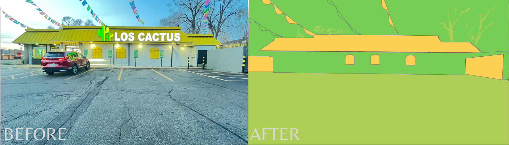

Illustrated Environment
I chose this place because it looked really colorful and nice, and I thought it would be fun to transform it into an illustration. Using the photo as a template, I started tracing the shapes and simplifying everything so it looks more clean and graphic. I separated the background, middle ground, and foreground in different layers to keep it organized. Since we could only use three colors, I picked a triad palette that still keeps the vibe of the original place.
